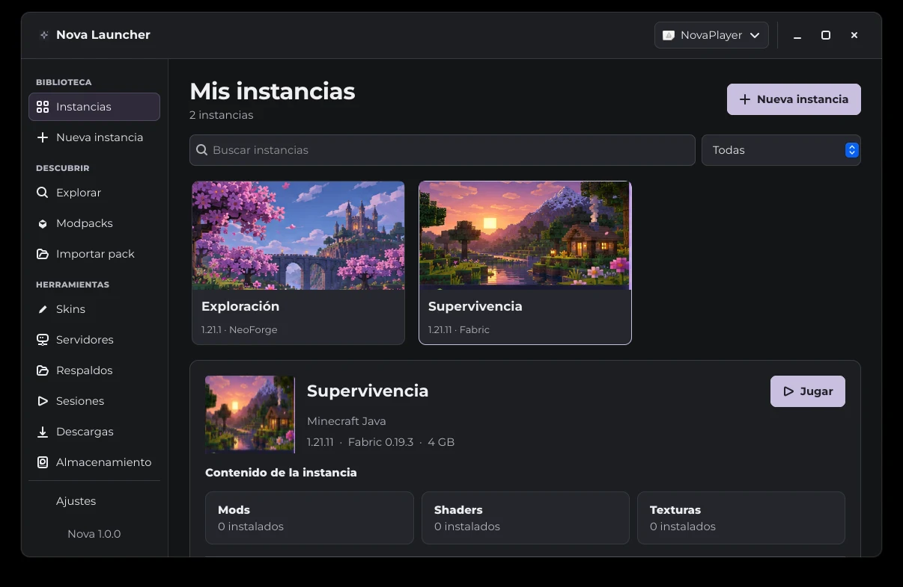
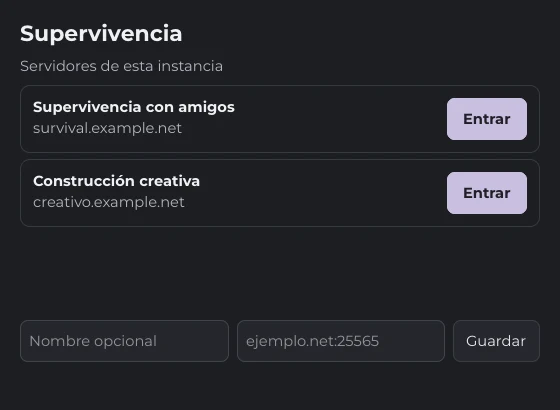

Instancias separadas
Elegí la versión y el cargador para cada partida. Cambiá la RAM y Java por instancia.
Fedora · Beta 0.9.9
Creá instancias separadas, instalá mods y guardá copias de tus mundos. Todo desde Nova Launcher.
Próximamente en Windows

Novedad de Nova 0.9.8
Elegí una instancia y abrí Servidores. Nova muestra los que guardaste en Minecraft y te permite sumar otros por dirección.
Al pulsar Entrar, Nova inicia Minecraft con la versión y los mods de esa instancia e intenta conectarse al servidor elegido.

Nova 1.0 incluye migración desde Prism, respaldos individuales de mundos y exportación de modpacks a .mrpack.
Elegí la versión y el cargador para cada partida. Cambiá la RAM y Java por instancia.
Buscá mods, modpacks, shaders y texturas. Actualizá los mods que instalaste con Nova y volvé a la versión anterior cuando lo necesites.
Duplicá una instancia para probar cambios o restaurá un respaldo como una instancia separada.
Descargá el RPM y ejecutá este comando en la carpeta donde lo guardaste. Después abrí Nova Launcher desde el menú de aplicaciones.
sudo dnf install "$(xdg-user-dir DOWNLOAD)/nova-launcher-0.9.9-1.noarch.rpm"sudo dnf install ./nova-launcher-0.9.9-1.noarch.rpmRPM sin firma. El primer arranque de Minecraft descarga los archivos del juego.